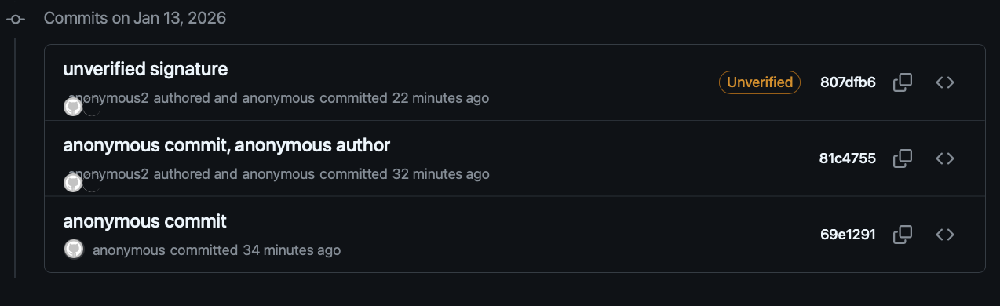

Commit Signing - Is it worth it?

Deep dive into why commit signing is worth it, even when hosted platforms like GitHub have strong authentication controls.
Published on January 05, 2026 by Kevin Quill
post security-engineering supply-chain-security explanation code-signing
15 min READ
Commit Signing - Is it worth it?
I started the journey of writing this thinking there would be scenarios where platform authentication would be sufficient and signing wouldn’t be worth the effort, but I was focusing on this control only from the code integrity perspective. That original assumption was correct but missed the point of signing in git. Code integrity isn’t the primary problem solved by signing, identity verification is. I just wasn’t aware just how mutable commit and author fields were by design. This is my journey of discovery into commit signing to understand when it’s pragmatic to recommend it.
This mirrors Dan Lorenc’s framing - signing is “maybe” worth it, but “probably for a different reason than you think.” The reason isn’t code integrity protection, it’s author attribution.
Why challenge this general best practice vs others? Implementing signing or any control that requires distributed change in workflow for all your engineers will be expensive/time consuming and use up your good will with those users for other changes. Therefore, I like to be sure what the benefit is and how it outweighs the cost.
The Co-location Problem
This problem is why I initially came at this with the wrong perspective. Looking at below without knowing about the Impersonation problem, you would question if signing is worth the extra effort.
My original hypothesis stems from this problem: for the most common signing implementations, the signing private key is just a secure as the auth material and hence doesn’t raise the bar for malicious activity.
- Typical setup: SSH keys and signing keys stored similarly
~/.ssh/id_ed25519vs~/.gnupg/- same filesystem, same user permissions- An attacker with filesystem access attempts to steal both
- Private key on Hardware tokens can’t be stolen, but attacker can use them while on machine
The Impersonation Problem
The author field is trivially spoofable
The fundamental disconnect between git identity and platform identity means git trusts self-attestation. There’s no verification - it simply records whatever name and email are configured locally.
# Spoof author on a single commit
git commit -m "Add backdoor" --author="Linus Torvalds <torvalds@linux-foundation.org>"
# Or set it as default for all future commits
git config user.name "Linus Torvalds"
git config user.email "torvalds@linux-foundation.org"
git commit -m "Add backdoor"
Anyone who can push code (repo write access) can claim to be anyone in git’s author field.
Enterprise Note:
Without signing, verifying who actually made a commit requires cross-referencing platform access logs - which most developers and reviewers can’t access. Vigilant mode surfaces this in the normal workflow where people actually look.
The vigilant mode solution
As mentioned, signing commits without any verification doesn’t provide much value. One platform-provided solution for this is GitHub’s Vigilant mode.
- Enable in GitHub settings to show verification status on ALL your commits
- Unsigned commits show as “Unverified”
- Impersonation attempts become visible (spoofed commits won’t have your signature)
- But: Requires you to sign commits, otherwise your own commits show as unverified
Critical point: Signing without verification is security theatre. The value comes from surfacing the “unverified” signal where people actually look:
- Open source: Enable vigilant mode personally - your commits show verified, impersonation attempts show unverified
- Enterprise: Enforce signing org-wide + require vigilant mode for all users - unverified commits become visible anomalies in normal workflow
The case against (and why I disagree)
Some argue commit signing isn’t worth the effort since account compromise still defeats it. This misses the point. Without signing, impersonation requires nothing - just set the author field. With signing + vigilant mode, impersonation requires account compromise to add a malicious key.
The bar moves from “know their email” to “compromise their account.” Account compromise is always a risk, but that’s a separate threat with separate controls.
Function of the Different Controls
In summary the different controls perform different functions and solve different problems. Therefore, having one doesn’t make the other redundant.
- platform auth: pull/push (essentially read/write to hosted code)
- Commit Signing: commit (provides the ability to verify the stated user)
- Important, signing isn’t a preventative control but enables verification later
- Vigilant Mode: verification to show if the commit user isn’t valid based on signature or if the author can’t be validated (essentially any time it doesn’t match committer)
TL;DR
Yes, commit signing is a valuable control if you care about who made a change
You need signed commits to be able to verify committer identity in git and the implementation doesn’t need to be complex, using the same SSH key you use for platform auth could suffice.
Signing on its own doesn’t fix the impersonation problem, it needs to be paired with verification to highlight issues in the commit signatures or missing signatures (e.g. GitHub Vigilant mode).
See the image below: Without signing, the git log should basically just show anonymous for all committer names/emails.

Enterprise Note:
Enforce signing but don’t worry about developer-level implementation details like SSH key on disk vs hardware-backed signing, unless you have serious code integrity requirements and you have implemented the other simpler controls like code review, branch protection, see rest of post.
The Baseline: What The Hosting Platforms Already Give You
Before progressing to looking at code integrity, I think it’s important to have some context on the wider set of controls that are relevant here. Below are the other controls outside of commit signing that are important to the topic of source code integrity in a hosted code platform like GitHub
- Authentication and Authorisation to control read/write access to code repositories
- Branch protection rules
- e.g. enforcing pull request reviews
- Signature verification (e.g., Vigilant Mode)
- Platform audit logs (who pushed what, when)
All these controls rely on two trust boundaries:
- The developer machine
- The developer’s account within the platform’s authentication system (GitHub/GitLab infrastructure)
Note: Some platform settings can strengthen the above controls making them harder to tamper with by an idividual or compromised developer account (e.g., re-authentication requirements, token expiration policies configurable in user/org settings, reusable workflows)
The Code Integrity Question
To come back to my original hypothesis: does code signing add value on top of platform auth for code integrity? The answer is more complex.
TLDR: Unless you have a very high risk threat model, and have already implemented controls like branch protection, code review, etc., using commit signing for code integrity isn’t the most pragmatic choice of control.
Ignoring risk of platform compromise, e.g., GitHub servers breached. If this is in your threat model you should be thinking about independent verification regardless.
With the impersonation problem covered by basic signing setups, what implementation, if any, will improve code integrity controls vs platform authentication? This is a topic covered at a high level by Palantir blog.
Why basic signing isn’t enough:
- If an attacker can steal your authentication material, they can steal your signing material
- Without independent verification of signatures, public keys could be updated for the user
- Without attestation or some control to enforce configuration of signing setup, it will drift towards the most convenient setup
Requirements:
Below are the requirements which would need to be met to improve code integrity guarantees via code signing. There are 3 aspects to it:
- Key Material
- Configuration Attestation
- Independent Signature Verification
The Yubikey Setup described in this post gives more specifics on meeting some of these requirements and will be used as an example. This doesn’t mean other implementations aren’t acceptable if they meet the same requirements or objectives.
Key Material
The example implementation here is using a Yubikey or similar device to generate keys on device and require presence for signing operations. This meets the below requirements:
- Requirement: Unexportable private key material
- Objective: Ensures key material can’t be stolen and used on other unmonitored devices.
- Requirement: Proof of presence (touch policy)
- Objective: Reduces time window when malicious activity can happen to when the user is present and performing legitimate signing actions anyway.
Configuration Attestation
The section below on “Security Control Degradation Over Time” explains why point in time implementations can’t be relied upon. Therefore you need to ensure the control meets the same requirements after a year as it did day 1.
- Requirement: Signing process must provide a way to attest its configuration meets the key material requirements.
- Objective: At scale, across all developers you can verify the implementation aligns with your requirements continuously while verifying a commit signature or when accepting new trusted keys for a user.
Alternatives to hardware keys:
This could also follow the approach of Sigstore Fulcio with OIDC integrations with Identity Providers to prove presence and identity and solve the storage problem with short-lived certificates. If you can demonstrate the restrictions on key longevity and access requirements, maybe the same objective can be met without needing hardware.
Yubikey Example: A Yubikey signed certificate is generated on device which can be exported and used to verify the private key signing commits and its associated touch policy configuration align with your requirements. This can be validated when accepting a new trusted public key.
Independent Verification
In order to solve the risk of GitHub signed web commits, dev’s platform account compromise, configuration attestation, etc., there has to be a process to verify the commit signatures against a central trust store.
- Requirement: If a user’s account within the code hosting platform (e.g., GitHub) is compromised, that access can’t be used to change that user’s trusted public key (e.g., used for verification)
- Objective: Provide independence to remove the user’s platform account as a single point of failure
- Requirement: Commit signature or trusted public key are verified to ensure they align with configuration attestation
- Objective: Commit signatures can’t pass verification if the way they have been signed can’t be validated
Threat Scenarios by Implementation
This section will review the different controls and their effectiveness against threats to code integrity. The two tables will demonstrate the impact of “Configuration Attestation” and why it’s required.
With Configuration Attestation (Ideal State)
| Threat Scenario | Platform Auth | Software Signing | Platform Signature Verification (vigilant mode) | “Hardware” Signing** | Independent signature Verification |
|---|---|---|---|---|---|
| Author impersonation | 🚫 commit and author spoofable | ✅ shows unverified | ✅ shows unsigned | ✅ Vigilant mode shows unsigned | ✅ Verification fails |
| Stolen GitHub token/session (push web commit) | 🚫 Already compromised | 🚫 Web commits signed by GitHub | 🚫 Web commits signed by GitHub | 🚫 Web commits signed by GitHub | ✅ Production changes blocked |
| Platform or Platform admin compromise | 🚫 Relies on platform controls | 🚫 Relies on platform controls | 🚫 Relies on platform controls | 🚫 Relies on platform controls | ✅ prevents single point of failure |
| Compromised developer machine (key material stolen) | 🚫 Auth material stolen | 🚫 Signing key also stolen | 🚫 Relies on secure signing key | ✅ can’t be extracted from hardware token, Attacker forced to stay on device | N/A |
| Compromised developer machine (code injected to legitimate commit) | 🚫 Auth material stolen | 🚫 Signing key also stolen | 🚫 Relies on secure signing key | ⚠️ Attacker forced to stay on device (no prevention, increased chance of detection) | 🚫 Verification will pass as code signed along with legitimate commit |
There are No Perfect Controls:
As you can see in both tables, even with the ideal setup, there are still attack vectors to sign a malicious commit. However, if paired with strong endpoint monitoring or controls like code review, these controls significantly improve your chance of detecting a malicious action. This is discussed more in Palantir blog.
Without Configuration Attestation (Reality Over Time)
| Threat Scenario | Platform Auth | Software Signing | Platform Signature Verification (vigilant mode) | “Hardware” Signing** | Independent signature Verification |
|---|---|---|---|---|---|
| Compromised developer machine (key material stolen) | 🚫 Auth material stolen | 🚫 Signing key also stolen | 🚫 Relies on secure signing key | 🚫 control drift, Likely accessible | N/A |
| Compromised developer machine (code injected to legitimate commit) | 🚫 Auth material stolen | 🚫 Signing key also stolen | 🚫 Relies on secure signing key | 🚫 control drift, Likely accessible | 🚫 Verification will pass as code signed along with legitimate commit |
Control Drift - Common “most convenient setup” shortcuts
- Generating keys on laptop then importing to hardware token (defeats the purpose)
- Backing up hardware-generated keys to disk “just in case”
- Not enforcing touch policy
- Exporting keys to multiple tokens without proper key ceremonies
The gap: The difference between “Ideal State” and “Reality Over Time” is entirely about enforcement. Without technical controls that verify proper setup and perform external verification, you get degraded behavior over time.
Why Hardware Signing Helps (When Done Right)
- Forces attacker persistence: Can’t exfiltrate key, must stay on machine to sign
- Increases detection window: More time for monitoring/EDR to catch malicious activity
- Touch policy adds friction: Even cached-fixed requires periodic physical access and forces the attacker to time changes with legitimate activity, again increasing detection window.
- But: Only works if you can continuously verify keys were generated on-device and remain properly configured (attestation + ongoing verification)
Security Control Degradation Over Time
Initial rollout (Month 1-3)
- Engineers follow secure setup procedures
- Hardware tokens properly configured
- Keys generated on-device, touch policies set
- High compliance with security guidance
Reality after 6-12 months
- New laptop setup → “I’ll just import my backup key this once”
- Lost/forgotten hardware token → “I’ll generate a new key on disk temporarily”
- Frustration with touch policy during rebases → switched to longer cache or disabled
- New team members follow examples from existing codebases/wikis that show convenient patterns
- Critical mass shift: Once enough engineers use convenient workarounds, it becomes the de facto standard
Why this happens (not a criticism)
- Legitimate friction accumulates: lost tokens, laptop replacements, travel without token
- No immediate feedback when taking shortcuts (signing still works)
- Peer examples normalize workarounds (“everyone does it this way”)
- Toil builds up over hundreds of commits per month
- Security team isn’t notified when engineers modify their setup
The enforcement gap
- Without technical controls that verify proper setup (e.g. attestation), you have no visibility into this drift
- “Ideal State” → “Reality Over Time” transition happens silently
- By the time the security value has degraded, the implementation cost has already been paid
This is why the “Configuration Attestation” requirement is so key to ensure the investment in independent verification and hardware keys stays valuable long term.
Conclusion
The misconception: Commit signing prevents malicious code from reaching production.
The reality: Signing solves identity, not integrity. Git’s author field is trivially spoofable; signing is the only way to verify who actually made a commit.
Practical recommendations:
- For most teams: Enable signing with your existing SSH key + vigilant mode. If on-disk SSH keys are acceptable for authentication, they’re acceptable for signing. This solves impersonation.
- For code integrity: Hardware keys alone don’t get you much at scale. You need the full stack: hardware-backed keys + configuration attestation + independent signature verification. Without attestation, implementations drift toward convenience and you’re back to software signing within a year. Accept this operational overhead only if you’ve already implemented code review and branch protection, and have genuine supply chain concerns.
Don’t let perfect be the enemy of good. Basic signing with vigilant mode is a significant improvement over platform auth alone, where anyone with push access can claim to be anyone.
Future direction:
The fundamental identity gap in git won’t be solved by hardware tokens alone. OIDC-based signing (like Sigstore’s Fulcio) ties short-lived certificates to your identity provider, eliminating long-lived key management entirely. The requirement that doesn’t change: enforcement and verification.